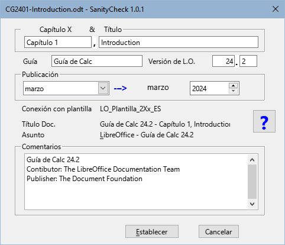
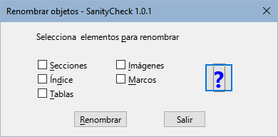
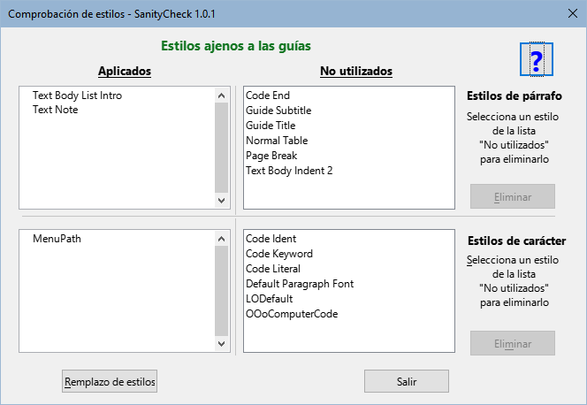
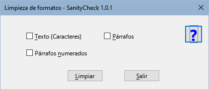
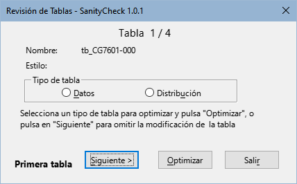
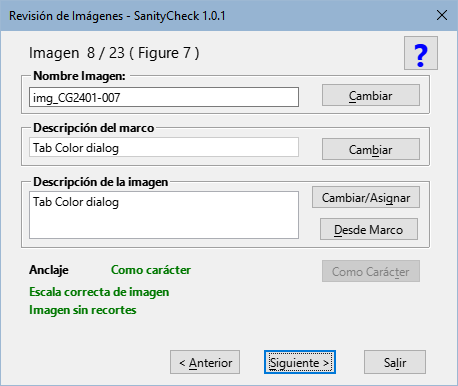

|
Español |
SanityCheck 1.0.1
Macros para unificar el formato y estilos de las guías de LibreOffice v.24.
Este documento tiene derechos de autor © 2024 por el equipo de documentación de LibreOffice. Los colaboradores se listan más abajo. Se puede distribuir y modificar bajo los términos de la GNU General Public License versión 3 o posterior o la Creative Commons Attribution License, versión 4.0 o posterior.
Todas las marcas registradas mencionadas en esta guía pertenecen a sus propietarios legítimos.
|
Autor |
Colaboradores |
|
B.Antonio Fernández |
Olivier Hallot |
Fuentes
Las macros que componen la extensión aquí descrita son fruto de consultar distintas fuentes las cuales nombro en rasgos generales pues me es imposible detallar. Estas son:
La propia documentación del lenguaje Basic de los distintos derivados de StarOffice.
Los libros: Aprendiendo OooBasic de Mauricio Baeza, OpenOffice.org Macros Explained de Andrew Pitonyak y Programmation OpenOffice.org de Bernard Marcelly.
Así como consultas variadas a los foros de OpenOffice y LibreOffice y el estudio de otras macros en las extensiones para Libre Office.
SanityCheck es una biblioteca de macros para Writer que pretende servir de ayuda para unificar el formato y los estilos de los capítulos y de las guías de LibreOffice.
Aunque algunas tareas se pueden realizar con las herramientas propias de Writer, las macros intentan centralizar las opciones que son específicas para el formato de los capítulos y automatizar algunos procesos que pueden llevar mucho tiempo y ser tediosos.
Como norma de seguridad, trabaje sobre una copia del archivo que vaya a revisar y haga copias progresivas de su trabajo.
Utilice las macros preferentemente en los capítulos, antes de ensamblar la guía, pues le será más fácil corregir errores de formato y reducirá el tiempo de ejecución de las macros.
Las macros están empaquetadas como extensión y su instalación se efectúa como cualquier otra extensión, desde el gestor de extensiones. Aunque es poco probable que tenga la versión 1.0.0 de esta extensión, se recomienda que la desinstale para evitar problemas.
Están escritas en LO Basic por lo que deberían ser compatibles para cualquier sistema operativo sin necesidad de instalar ninguna dependencia.
Añade una barra de herramientas (figura 1), así como un menú con nombre LO SanityCheck y las herramientas también aparecen integradas en la interfaz de usuario En pestañas.
Figura 1: Barra de herramientas SanityCheck

Están disponibles en español, inglés y portugués, con la posibilidad de agregar otros idiomas añadiendo traducciones al módulo L10n.
Incorporan plantillas con los estilos propios de las guías (también en los tres idiomas para posibilitar la corrección ortográfica):
plantilla de capítulo (para los capítulos individuales).
plantilla patrón de documento (para ensamblar la guía completa).
plantilla de contraportada (para adjuntar a la guía completa).
Cada diálogo contiene una página de ayuda integrada que aporta información sobre la función de la herramienta y después ejecutar las macros se muestra un resumen de registro cambios.
Figura 2: Diálogo Campos

Nota
Los campos Capítulo X y Título son nuevos. Estos campos se usan para establecer la propiedad del documento Título y también para el pie de página. Se recomienda su empleo para el nombre del capítulo en la primera página.
Figura 3: Diálogo Renombrar objetos

Comprueba que los estilos empleados en los capítulos sigan los estándares de la plantilla para evitar estilos ajenos a las guías (generalmente estilos de plantillas anteriores).
Recorre el documento y marca los párrafos con estilo ajeno a la documentación con un comentario y resalta los estilos de carácter ajeno con fondo negro y letra amarilla.
Sustituye los estilos de párrafo anteriores a las guías de la versión 24 por sus correspondientes actualizados, algunos con nombre incorrecto (transición a la nueva plantilla) y el estilo de carácter MenuPath por Destaque mayor (restos de versiones antiguas).
Permite la eliminación de estilos ajenos cuando no están aplicados en el documento.
Figura 4: Diálogo Comprobación de estilos

Nota
Las macros no pueden hacerlo todo. La labor del revisor consiste en sustituir los estilos ajenos a la plantilla por los correctos y eliminarlos del documento
Figura 5: Diálogo Limpieza de formatos

Texto: limpia el formato directo aplicado a fragmentos o cadenas de texto.
Párrafos: Elimina el formato directo incluido el de bolos o numeraciones aplicado a párrafos normales y limpia también el formato directo de las listas no ordenadas.
Párrafos Numerados: En este caso, la macro elimina el formato directo aplicado a listas ordenadas y reinicia las numeraciones siempre que es posible, añadiendo un comentario a los párrafos en que puede que la numeración necesite un reinicio.
Nota:
Para que la macro reinicie correctamente las numeraciones, toda lista debe estar precedida por el estilo de párrafo Body Text, List Intro. En muchos casos el estilo anterior a las listas es Cuerpo de texto. La macro cambia el estilo de los párrafos anteriores a las listas con estilo Cuerpo de texto después de un mensaje de confirmación.
Figura 6: Diálogo Revisión de tablas

Figura 7: Registro de Revisión de imágenes

Esta macro no tiene un diálogo inicial, se ejecuta con los ajustes óptimos para los marcos e imágenes. Desde el diálogo de registro (figura 7)se puede acceder a la macro Recorrer imágenes.
Aplica el ancla y formato adecuado a las imágenes, a los marcos que las contienen y a las leyendas.
Obtiene el texto de la leyenda para aplicarlo a la descripción del marco e imagen.
Inserta comentarios en:
Imágenes cuya relación de aspecto está desproporcionada.
Imágenes que han sido recortadas con Writer.
Leyendas mal formadas (posibles fallos en la modificación de una leyenda ya insertada).
Figura 8: Diálogo Revisión de imágenes

Las macros para verificar estilos y limpiar el formato directo están basadas directamente en las plantillas suministradas.
Para que las macros funcionen correctamente, los capítulos tienen que tener aplicada la plantilla adecuada mediante la extensión Template Changer o se tienen que importar los estilos desde la plantilla.
Problema:
Solución:
Cree un documento nuevo a partir de la plantilla.
Guarde ese documento como plantilla.
Importe la plantilla creada al directorio de plantillas de usuario si lo cree necesario.
Los campos de propiedades del documento introducidos en la versión 24 como son Contributor, Editor etc. no son accesibles (por el momento) por las macros. Si es necesario, establezca estos campos en el diálogo Propiedades del documento de Writer.
Problemas con Nombres de estilos:
Solución:
Problema con estilos de carácter:
Solución:
La macro no puede distinguir que tipo de formato directo se ha aplicado a un párrafo, por lo que elimina todo el formato directo, sea de sangría, de numeración o bolos, espaciado etc.
Consejo:
Las secuencia de numeración en listas ordenadas puede estar interrumpida por imágenes, avisos, notas o sugerencias.
Al limpiar el formato, la secuencia de numeración se pierde y la numeración se vuelve continua. Las macros intentan reiniciar la numeraciones pero no es fácil distinguir dónde reiniciarlas. Aunque la macro avisa de puntos donde se podría reiniciar, no es infalible.
Consejo:
Los estilos personalizados de las tablas no se aplican ni funcionan como los estilos de párrafo o de carácter, por lo que aunque aplique el estilo LO User Guides, es muy probable que tenga que ajustar la tabla para la división entre páginas, si fuera necesario y aplicar un formato más adecuado mediante el diálogo Propiedades de la tabla de Writer.
En algunos casos, la macro inserta un comentario en imágenes que no es comprensible.
Problema:
Solución:
En algunos casos la macro inserta un comentario de leyenda mal formada no comprensible.
Problema:
Solución:
Problema:
Solución: